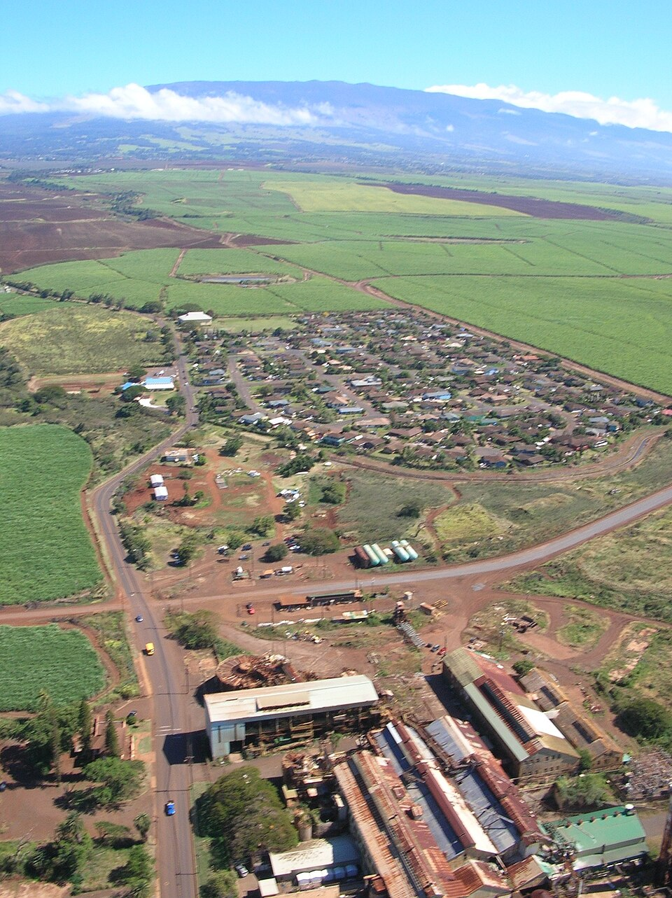

Skill Village
Place: Skill Village, Pāʻia, Maui
Type: Residential neighborhood / former plantation camp
Namesake: The skilled tradespeople who worked at Pāʻia Sugar Mill
Story it tells: How a neighborhood associated with skilled sugar mill workers evolved from plantation-era housing into a residential community surrounded by Maui's sugarcane fields.

Skill Village is a neighborhood in Upper Pāʻia whose roots reach back to Maui's sugar plantation era. The nearby Pāʻia Sugar Mill was surrounded by a network of worker housing camps, including Mill Camp (site of Skill Village), Nashiwa Village, Orpheum Village, Hawaiian-Spanish Village, and others where generations of plantation families lived. These communities reflected the organization of plantation life, with housing often associated with particular occupations or ethnicities. Skill Village's name recalls the skilled tradespeople who kept the mill operating, including mechanics, blacksmiths, boilermakers, and other specialized workers.
Life in the plantation camps extended beyond the mill and surrounding fields. Neighborhood stores and recreational facilities served the families who lived throughout Upper Pāʻia. Among them was the Pāʻia Gym, built in the late 1930s, which provided a place for recreation and community activities and remains standing today. Together with the Pāʻia Store, which was lost in a 1963 fire, these facilities formed a core part of the plantation community.
As Maui's plantation economy changed, so did the housing surrounding Pāʻia Mill. In the 1980s, Maui County pursued an affordable housing development in the area, helping transform portions of the former plantation housing network into a modern subdivision. The development introduced new homes and upgraded infrastructure alongside older plantation-era housing, creating opportunities for local families to establish themselves in Upper Pāʻia.
For residents, life in Skill Village was closely connected to the surrounding sugarcane fields. Homes stood near the mill, and the entire neighborhood was surrounded by miles of rolling sugarcane fields. During the burning of cane fields in preparation of harvesting, ash would fall from the sky, like dark flakes of snow. Known locally as "Maui snow," it was a familiar part of plantation and Skill Village life. Mill and plantation infrastructure flanked the community with Pāʻia Mill Road and Kaheka Road used by haulers and support vehicles kicking up dust and the nearby punawai reservoirs and hydros mauka of the neighborhood.
Pāʻia Sugar Mill closed in 2000, bringing an end to the industrial activity that had shaped the surrounding communities for generations. Much of the former sugarcane land in the region is now part of Mahi Pono's diversified agricultural operations, marking another chapter for the area. Today, Skill Village retains a mixture of older wooden plantation-style homes and newer residences built or expanded during the neighborhood's redevelopment. Its streets preserve a connection to Upper Pāʻia's working-class past, while the surrounding agricultural lands continue to shape the neighborhood's character.